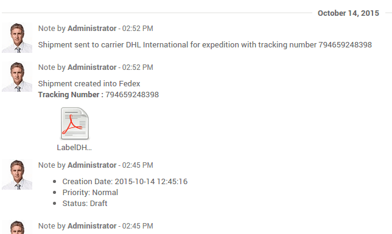

Overview
Odoo can handle various delivery methods, including third party shippers. Odoo can be linked with the transportation company tracking system. It will allow you to manage the transport company, the real prices and the destination.
Configuration
Install the shipper company connector module
In the inventory module, click on . Under Shipping Connectors, flag the transportation companies you want to integrate :

Then click on Apply.
Note
If you want to integrate delivery methods in your e-commerce, you'll have to install the eCommerce Delivery module.
Configure the delivery method
To configure your delivery methods, go to the Inventory module, click on .
The delivery methods for the chosen shippers have been automatically created. Most of the time, there will be 2 delivery methods for the same provider: one for international shipping and the other for domestic shipping.
You can create other methods with the same provider with other configuration, for example the Packaging Type.
You can change the Name of the delivery method. This is the name that will appear on your ecommerce.
Flag Shipping enabled when you are ready to use it.
In the pricing tab, the name of the provider chosen under the Price computation means that the pricing will be computed by the shipper system.
The configuration of the shipper is split into two columns:
- The first one is linked to your account (developer key, password,...). For more information, please refer to the provider website.
- The second column varies according to the provider. You can choose the packaging type, the service type, the weight unit...
- Uncheck Test Mode when you are done with the testings.
Finally you can limit the delivery method to a few destinations. You can limit it to some countries, states or even zip codes. This feature limits the list of countries on your e-commerce. It is useful for the domestic providers. For example, USPS US only delivers from the United States to the United States.

Company configuration
In order to compute the right price, the provider needs your company information. Be sure your address and phone number are correctly encoded.

To check your information, go to the Settings application and click on General Settings. Click on the first link Configure your company data.
Product configuration
The shipper companies need the weight of your product, otherwise the price computation cannot be done.
Go the menu . Open the products you want to ship and set a weight on it.

Tip
The weight on the product form is expressed in kilograms. Don't forget to make the conversion if you are used to the imperial measurement system.
Sale process
Sale order

You can now choose the carrier on your sale order. Click on Delivery method to choose the right one.
The price is computed when you save the sale order or when you click on Set price.
If you want to invoice the price of the delivery charge on the sale order, click on Set price, it will add a line with the name of the delivery method as a product. It may vary from the real price.
Otherwise, the real price (computed when the delivery is validated) will automatically be added to the invoice. For more information, please read the document How to invoice the shipping cost to the customer?
Delivery
The delivery created from the sale order will take the shipping information from it. You can change the carrier if you want to.
If you create a delivery transfer from the inventory module, you can add the third party shipper in the additional info tab.

The weight is computed based on the products weights. The shipping cost will be computed once the transfer is validated.
Click on Validate to receive the tracking number. The Carrier Tracking ref field will automatically be filled. Click on the Tracking button to check your delivery on the provider website.

The label to stick on your package is available in the history underneath :
